Ten Facebook doors on Olive, Wishon, Van Ness, and Fern. Each stop has the address, a short history of the room, photos to scroll, and the page itself.
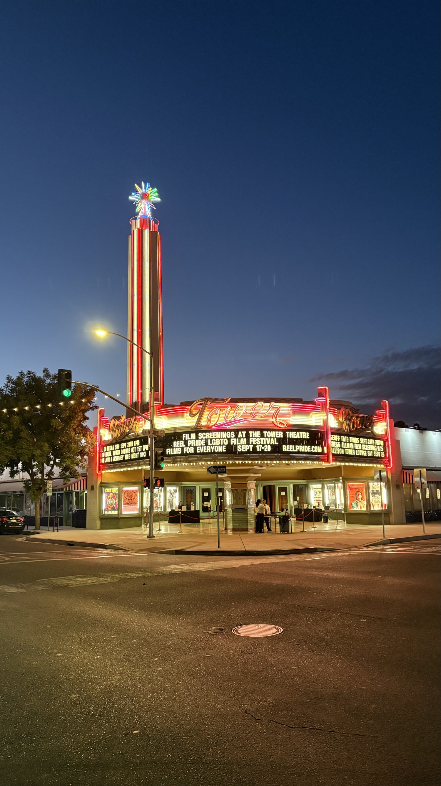
Tower Theatre at dusk. The landmark these rooms orient from. It is not one of the ten pages.
Start at the Tower Theatre and walk. Breakfast is on the west end of Olive. Pizza and a concert room sit just off that corner. Indian food holds the Fulton corner that sat empty for years. Cocktails and tacos share 920 East Olive. Wishon still has the 1976 pizza parlor and the beer bar that is not a mortuary. Van Ness has the neighborhood market and the brewery in the old Audie's Olympic.
Hours move. Check the Facebook page before you walk over.
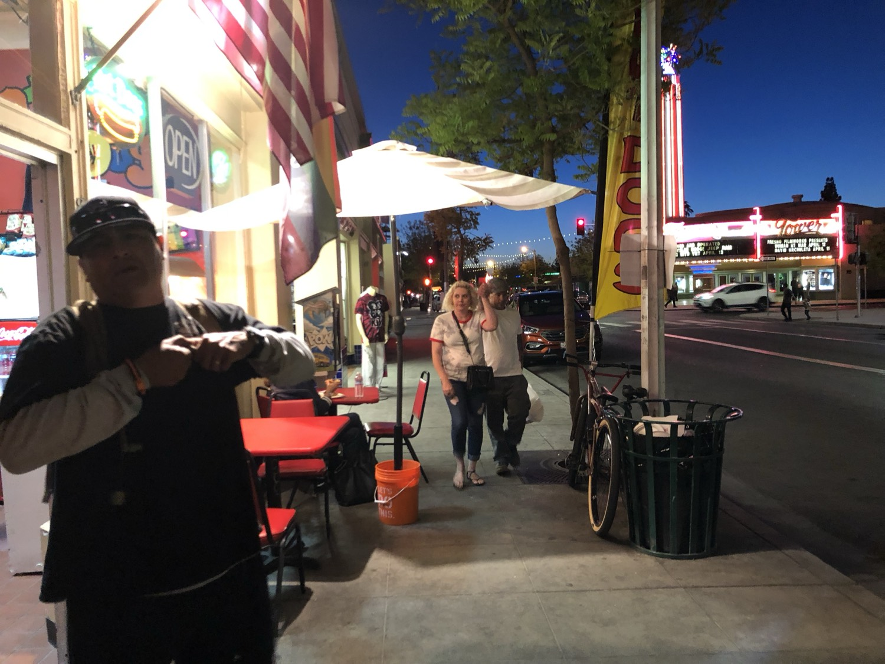
Olive at dusk. The Theatre is down the block.
747 E. Olive Ave
Irene's Cafe
Family owned since 1991, Irene's is the breakfast room on this list. The cafe opens at 8 a.m. and runs through lunch, with dinner hours on the later days. The painted beach wall and the palm-tree signs are the giveaway from the sidewalk. Staff have called the last thirty-plus years in the middle of Tower an honor. The room still does breakfast, lunch, dinner, and catering. Phone (559) 237-9919.
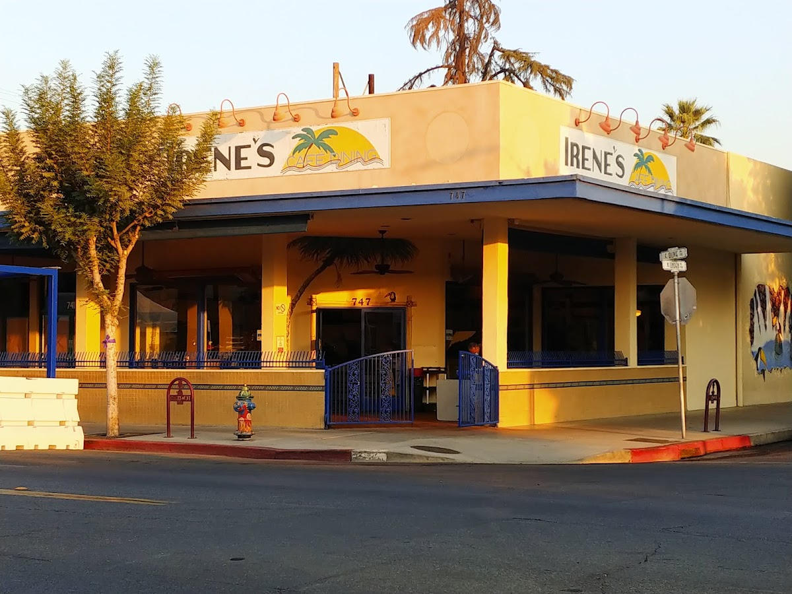
Corner at 747 East Olive. The address is on the beam.
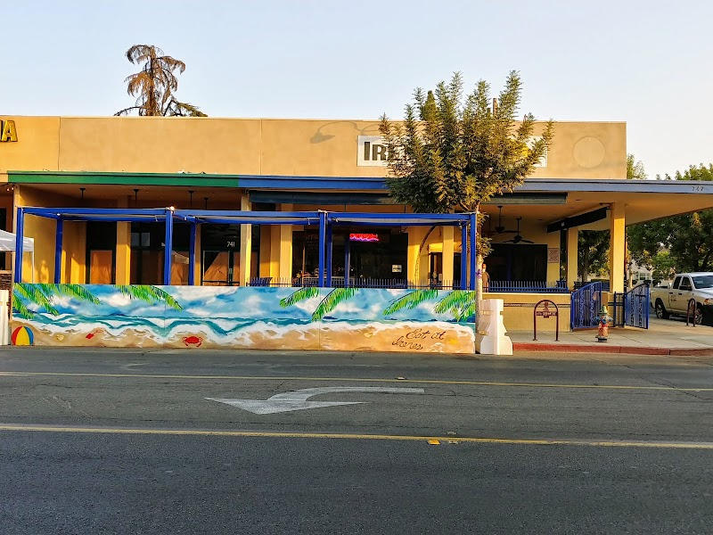
The Olive side mural. Family owned here since 1991.
The Tower room opened in October 2017 beside Lucy's Lounge at 733 East Olive, after the signs had been up for months. Mama Mia was already a north-Fresno shop at Palm and Bullard, about fifty years old by then, founded by Mike Di Nuzzo. His children, Michael Anthony, Lorenzo, and Gianna, took the Tower location. The Bee described an express menu for people who wanted a quick meal, with late hours on the weekend side. Phone (559) 369-4298.
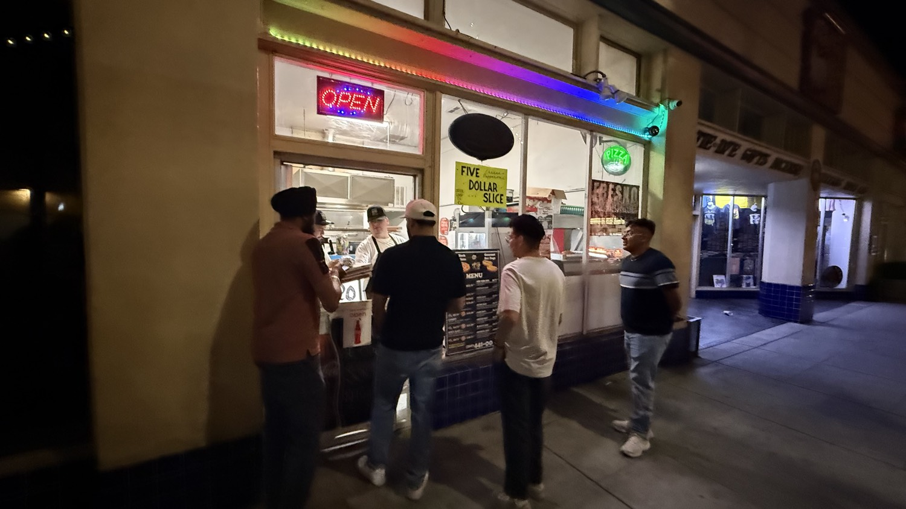
Olive slice window after dark.
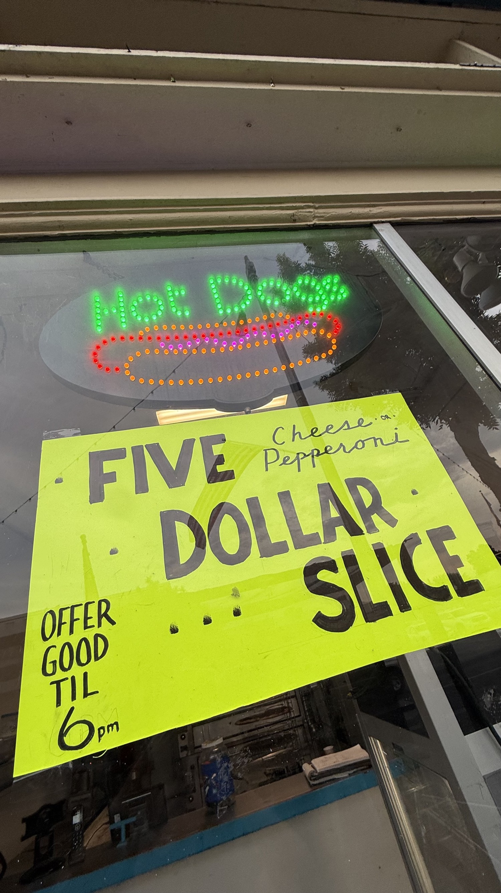
Five dollar cheese or pepperoni, good until 6 p.m.
Named for Joe Strummer of The Clash. The room is a concert hall, restaurant, and bar one block south of Olive, booked through Numbskull Shows. One side is the live room. The other is a full bar and kitchen with meat, vegetarian, and vegan plates, often with no cover. Published notes put all ages in the building until 9 p.m., then 21 and over. Phone (559) 485-5356. The mural inside says the quiet part out loud: Greetings from Strummer's, Fresno, California.
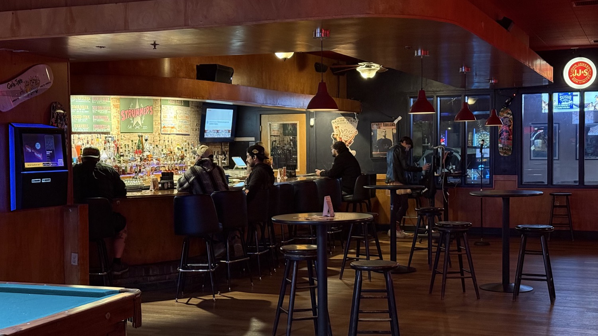
The bar side. Pool table in the foreground.
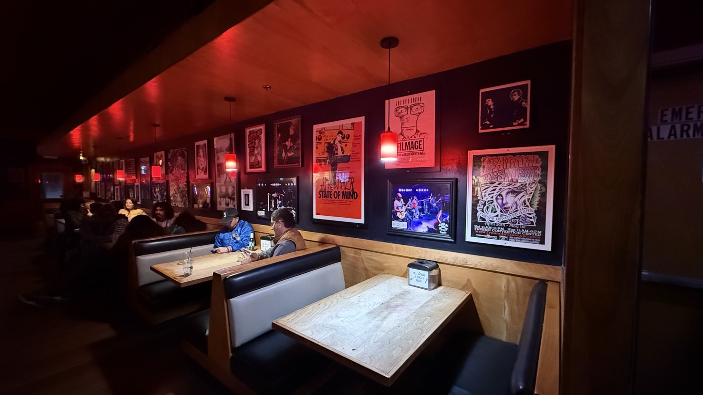
Booths and show posters under the red lamps.
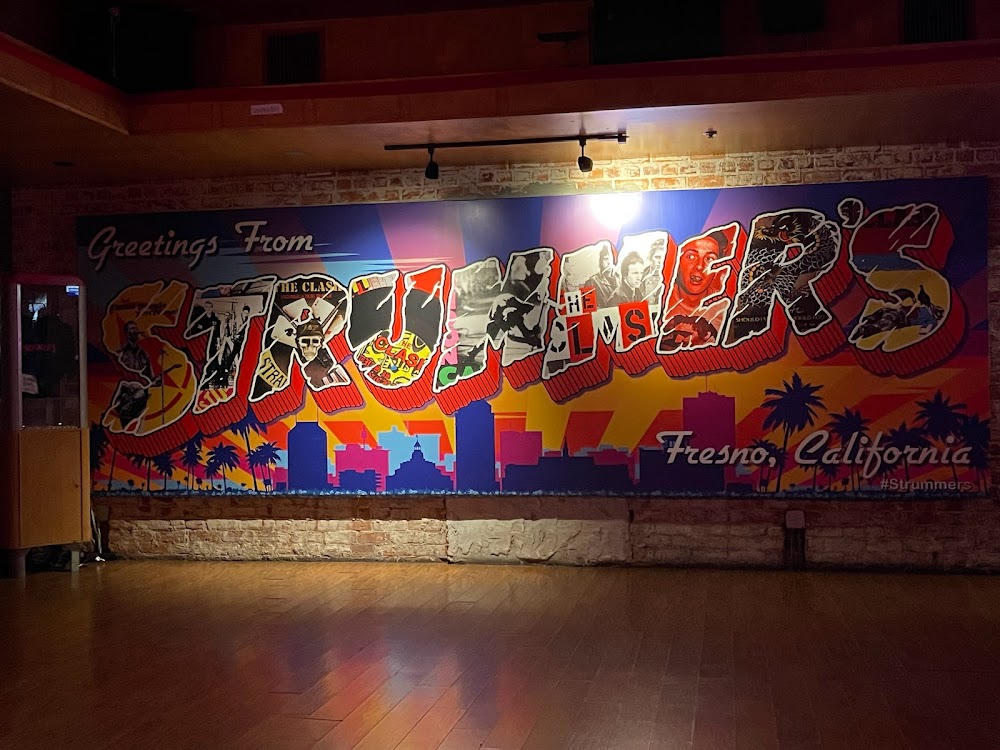
Greetings from Strummer's. Clash imagery in the letters.
Opened Monday, April 29, 2019, in the former Million Elephant Cafe and Bar at Fulton and Olive. The corner had sat empty nearly four years. Three years before the opening, the Bee had written about bullets in the building and plywood on the windows. Owner Sunny Sehgal told the paper the job was a renovation down to the foundation, on the order of half a million dollars, after the family had been eighteenth on a waiting list for the space. The kitchen is Northern Indian, Punjab in particular: curries, tikka masala, karahi, korma, tandoori, roti, and naan. A second room later opened on West Ashlan.
Opened in December 2021 in part of the old Fulton's Folly antique collective, behind the Deli Delicious corner. Majority owner Craig Johnson called the bar a love letter to Fresno. Partners include Gazebo Gardens owner Scott Miller, Jeff Wolpert, and dentist Scott Schapansky. The name points at Chester Arthur Burnett, the blues singer Howlin' Wolf, and the 1956 record Smokestack Lightning. The room is speakeasy and art deco on purpose: house syrups, a stage, patio, and seating that reused pieces from the closed Chicken Pie Shop. The same circle owns Goldstein's on Wishon. Phone listed by Visit Fresno County: (559) 319-8545.
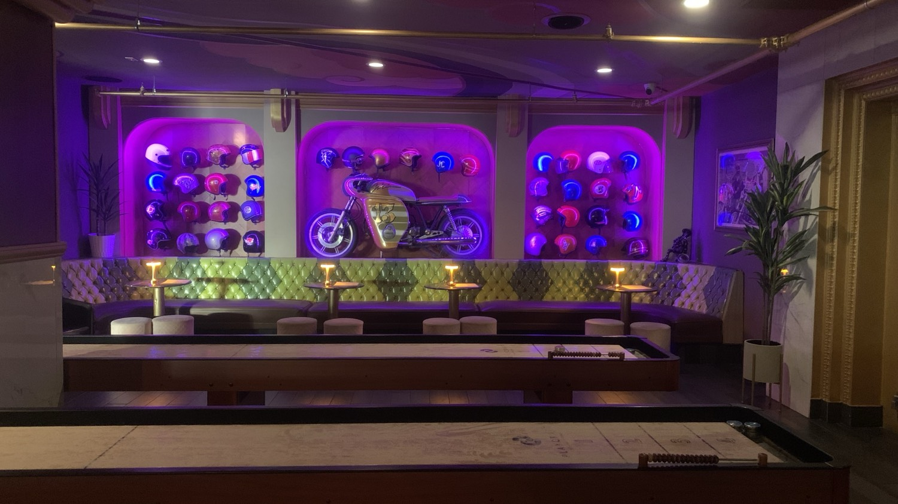
Helmet wall and the motorcycle. Shuffleboard in front.
Grand opening Saturday, September 23, 2023, next door to the Howlin' Wolf. Claudia Moreno, known for twenty years as DJ Tipzy, had run the original Tipzy's on Belmont Avenue since 2019 and set the turntables down to open this room with partner Angelina Ybarra. The pitch was homemade tortillas and salsa, not a bar that happened to have tacos. Karaoke stayed on the calendar. The Belmont shop had cost her about $20,000 and maxed cards before the Tower landlord's brother, a regular there, helped open the door. Phone posted for the Tower room: (559) 721-2871.
The Wishon parlor has a City of Fresno business start date of May 22, 1976. That makes it the oldest room on this list. The name is older than the address. Russ "Me" Johnson, brother of Shakey's founder Shakey Johnson, and Ed Sandlin fired the first oven in Sacramento in 1958. Fresno is where the chain took root. Tom Ferdinandi Sr. and Jim DeMera later bought local shops, including the Blackstone parlor, and the Ferdinandi brothers grew the Valley footprint. The Tower room is the one with the games in the corner and the self-pour taps. Thin crust, combination pizza, a booth if you get there early.
Opened the week of July 17, 2015. It is not a mortuary and it is not a deli. Co-owner Ephiram Bosse's line, reported by the Bee, was "No bodies. No pastrami. Just beer." Goldstein is Emmanuel Goldstein from George Orwell's 1984. Bosse and contractor-artist Craig Johnson built the room. Johnson did most of the visual work, and the art has been for sale. A boat has served as a bar. Outside food is allowed. The tap list has run around forty handles, plus cider and the odd non-beer. Monday nights have drawn card players to the back patio.
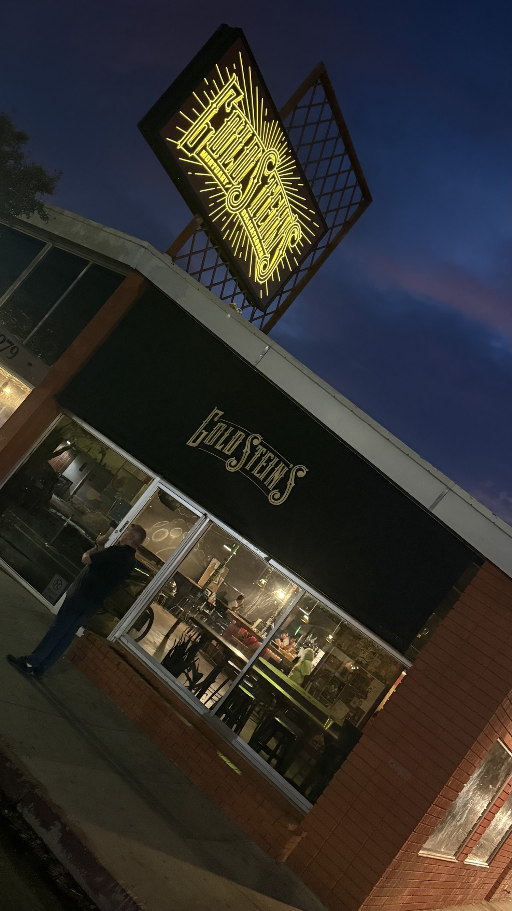
The Wishon sign at dusk. Address 1279 on the window.
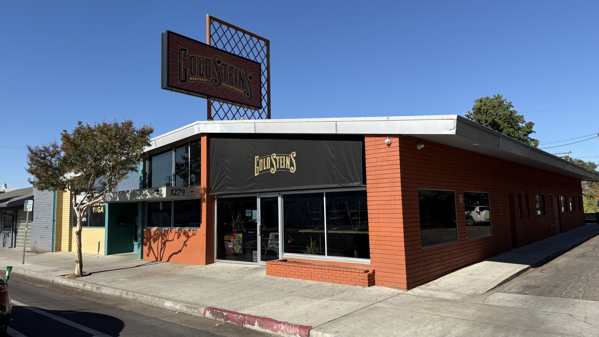
Daylight. The blade sign says mortuary and delicatessen.
This Facebook page is the grocery, not the Thursday farmers market on Olive. The sign on Van Ness reads Tower Market, with taqueria, deli, carniceria, meat, check cashing, and fresh produce on the yellow band underneath. The page posts weekly specials in English and Spanish and says the store is open seven days, including holidays. Phone on the page: (559) 266-1060. It is the practical stop on this list. Watermelon, eggs, masa, hot food, and a place to cash a check without leaving the neighborhood.
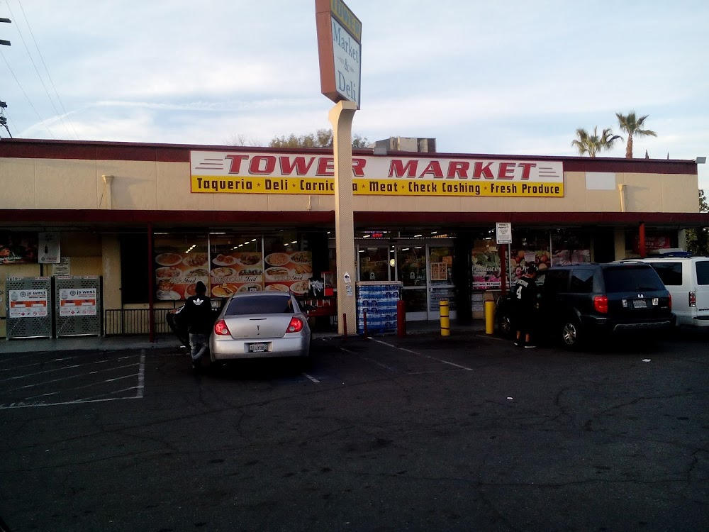
Storefront at 1233 North Van Ness. Pole sign and the yellow service band.
Opened the week of St. Patrick's Day 2025, about three hours after the ABC license landed, according to partner Jason Hatwig. The building is the old Audie's Olympic Tavern, also Club Fred under Fred Martinez, later the Oly, then a short Full Circle Olympic taproom in 2019. Audie's closed in 2016. The art deco front went mostly dark after that. A cannabis plan for the Artist Tree died on appeal at City Council. Summer Fox, the Fresno and Clovis brewery tied to the Hsia and Lisitsin families, painted the room orange and black and kept the stage. The blue shag and the Freds mural did not make the trip. Live music and trivia are back on the Facebook page.
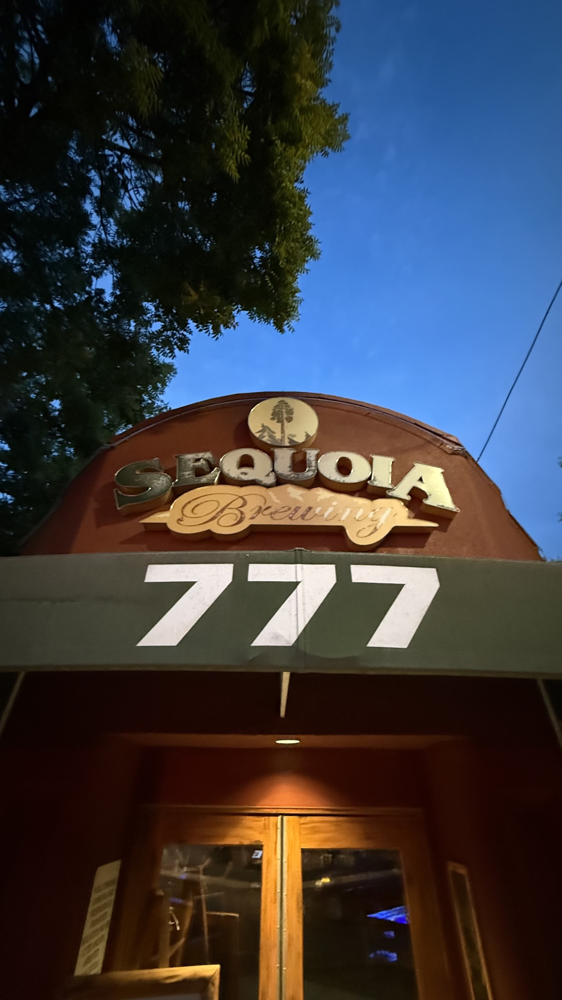
777 is Sequoia Brewing, down Olive from Irene's. Not one of the ten pages. No Summer Fox photo in this set.
These ten pages are a neighborhood, not a chain. If a room is dark, the Facebook post usually says so before the door does. If you only have one stop, Irene's is the morning, Me-n-Ed's is the long memory, Goldstein's is the joke that stuck, and Summer Fox is the room that came back.
Sources
Irene's Cafe, 747 E. Olive Ave. Family owned since 1991. Fresno City College Rampage, April 10, 2026.
Bethany Clough, Fresno Bee, October 16, 2017. Mama Mia and Lucy's Lounge open at 737 and 733 E. Olive.
Bethany Clough, Fresno Bee, April 29, 2019. India's Oven opens at the former Million Elephant, 1153 N. Fulton.
Bethany Clough, Fresno Bee, December 14, 2021. The Howlin Wolf opens at 920 E. Olive. howlinwolfcocktails.com.
Joshua Tehee, Fresno Bee, September 19, 2023. Tipzy's Tacos and Beer Tower opening. The Business Journal, September 25, 2023.
City of Fresno business license, Me-n-Ed's On Tap, start date May 22, 1976, 1247 N. Wishon. Fresno Bee on the Ferdinandi family and the 1958 Sacramento founding.
Bethany Clough, Fresno Bee, July 21, 2015. Goldstein's opens at 1279 N. Wishon. ABC30, July 17, 2015.
Tower Market and Deli Facebook page, 1233 N. Van Ness Ave, (559) 266-1060.
Joshua Tehee, Fresno Bee, March 27, 2025. Summer Fox in the former Audie's Olympic, 1426 N. Van Ness. Fresno Flyer, May 12, 2025.